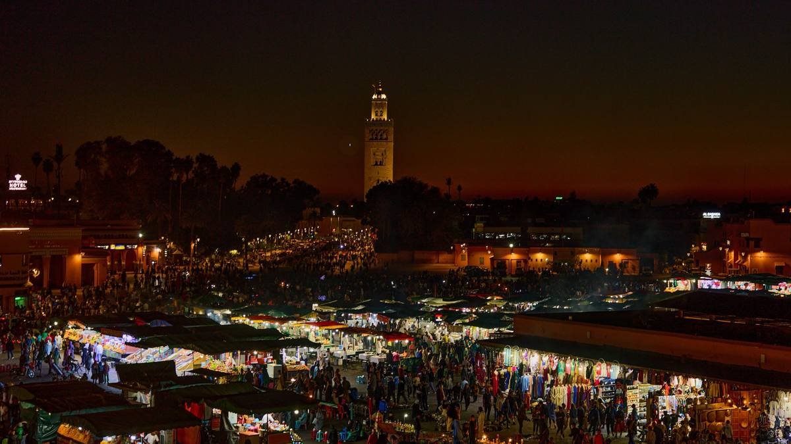
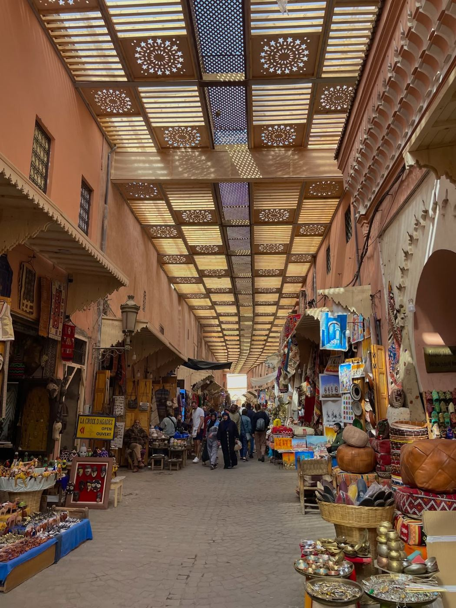
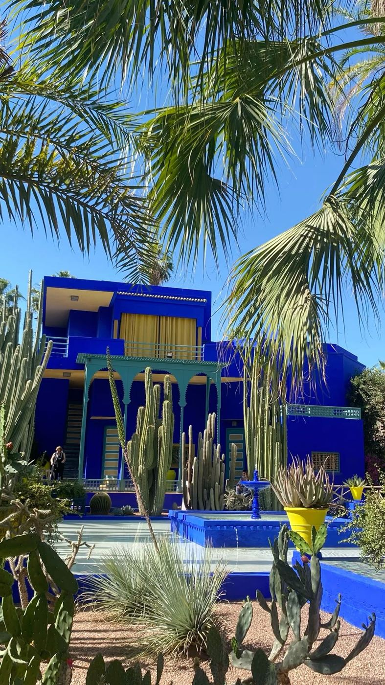
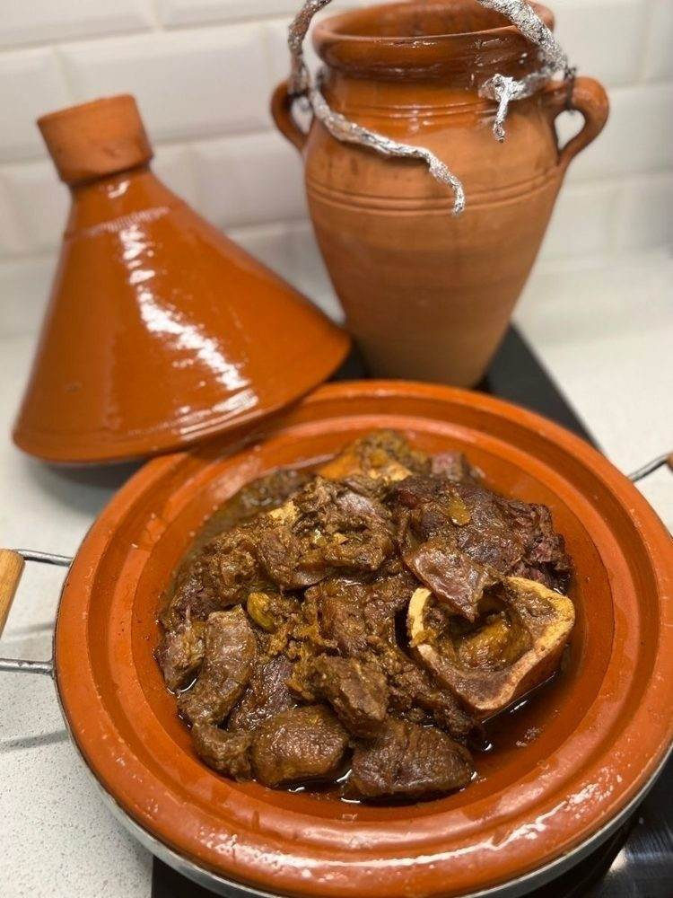
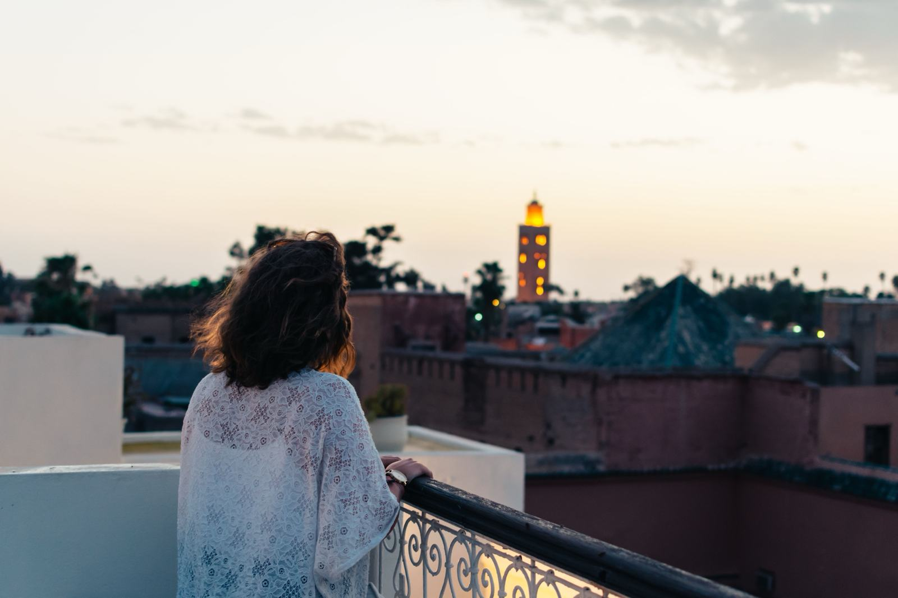

Marrakech is the city most travellers discover first in Morocco, and it rarely leaves anyone indifferent. The red city mixes a huge medina full of souks and palaces, peaceful gardens, a legendary square that comes alive every evening, rooftop terraces with views of the Atlas, and easy escapes to the mountains and the desert.
Here are the 20 best things to do in Marrakech, from the essential monuments to the local experiences, with our tips to enjoy each one and to organise your days. For a ready-made plan, read Marrakech in 3 days.
In the heart of the medina
1. Jemaa el-Fnaa at sunset
The great square is the beating heart of Marrakech. By day you find orange juice stalls, henna artists and snake charmers; at sunset dozens of food stalls appear, the smoke rises from the grills, and musicians, storytellers and acrobats gather crowds. Its living culture was recognised by UNESCO as a masterpiece of oral heritage. Watch the show from a café terrace above the square.

2. The Koutoubia mosque
Its 12th-century minaret, about 77 metres high, is the symbol of the city and was the model for the Giralda of Seville and the Hassan Tower of Rabat. Non-Muslims cannot enter the mosque, but the gardens around it are lovely in the late afternoon.
3. Get lost in the souks
North of Jemaa el-Fnaa, a maze of covered lanes is organised by trade: spices, leather, lanterns, carpets, babouches, ceramics and woodwork. Take your time, compare and bargain with a smile: read our tips for bargaining and tipping.


4. The Ben Youssef madrasa
The largest Koranic school in Morocco, rebuilt in the 16th century, is a masterpiece of zellige tiles, carved stucco and cedar around a courtyard with a basin. Go early to enjoy it before the crowds.
5. Le Jardin Secret
A restored palace garden in the middle of the medina, with an Islamic garden, an exotic garden and a tower with a view over the rooftops. A perfect quiet break between two souks.
6. The tanneries
Near Bab Debbagh, the tanneries of Marrakech are smaller and less visited than those of Fes. Be careful with people who insist on guiding you there: go with your own guide or politely refuse.
Palaces, tombs and museums
7. The Bahia Palace
Built at the end of the 19th century for the grand viziers of the sultan, the Bahia is a succession of courtyards, painted ceilings, gardens and rooms decorated with zellige and stucco. It is one of the most beautiful palaces in Morocco.
8. The Saadian Tombs
The tombs of the Saadian dynasty (16th century) were hidden behind walls for centuries and rediscovered in 1917. The Hall of the Twelve Columns, with its marble and carved cedar, is spectacular. Arrive at opening time, as the queue can be long.
9. El Badi Palace
Once one of the most luxurious palaces in the Islamic world, built by the sultan Ahmed al-Mansur, today it is an immense ruin of earthen walls, sunken gardens and storks’ nests. Climb the terraces for a great view.
10. The Mellah
The old Jewish quarter, near the Bahia, with its spice market, its covered market and the Lazama synagogue, tells another chapter of the history of Marrakech.
11. Dar Si Said and the museums
The Dar Si Said palace houses a museum of weaving and carpets. The Maison de la Photographie, in the medina, shows fascinating old photographs of Morocco, and its terrace café is a lovely stop.
Gardens and modern Marrakech
12. The Majorelle Garden and the YSL Museum
Created by the painter Jacques Majorelle in the 1920s and 1930s, then saved by Yves Saint Laurent and Pierre Bergé, this garden of cacti, bamboo and palms around a villa painted in an intense blue is one of the most visited places in Morocco. Next door, the Yves Saint Laurent Museum shows the designer’s work. Book online and go early.

13. The Menara gardens
Olive groves around a large basin and a pavilion, with the High Atlas in the background on clear days. A simple and local place for a walk.
14. Gueliz, the new town
The modern district built in the 20th century, with galleries, cafés, concept stores and restaurants, shows the contemporary face of Marrakech.
Local experiences
15. A traditional hammam
Steam, black soap, a scrub with the kessa glove and a ghassoul mask: the hammam is a must after a day in the souks. Read our hammam guide.
16. A cooking class
Go to the market with a local cook, then learn to prepare a tagine, salads and bread. You leave with the recipes and a lot of good memories.
17. Taste the tangia and the street food
The tangia, meat slow-cooked for hours in a clay jar in the ashes of a hammam, is the speciality of Marrakech. Try it, along with harira, msemen and grilled meat. More dishes in our guide to Moroccan food.

18. Sunset on a rooftop
End the day on a terrace above the medina, with a mint tea, the calls to prayer and the Atlas glowing pink on the horizon.

19. A hot air balloon at sunrise
Fly over the palm groves and the Berber villages as the sun rises over the Atlas, followed by a traditional breakfast.

20. Day trips and the desert
Marrakech is the perfect base to explore the region:
- The Ourika valley and its waterfalls in the High Atlas: see our Ourika day trip.
- The Ouzoud waterfalls, the highest in Morocco, with monkeys: see our Ouzoud day trip.
- Essaouira, the white and blue port on the Atlantic: see our Essaouira day trip.
- The Agafay desert, a stone desert less than an hour away, for a sunset dinner. Compare it with the real Sahara in Agafay or Merzouga?
- The Sahara dunes of Merzouga, the great adventure from Marrakech, in at least 3 days: see our 3-day desert tour and all our tours from Marrakech.
Practical tips for Marrakech
- How many days? Two full days for the medina and the gardens, three to add a day trip or a hammam and a cooking class.
- Best time: March to May and September to November. Summer is very hot; winter days are sunny and nights cold. See the best time to visit Morocco.
- Visit early: the main monuments are much calmer at opening time.
- Dress modestly in the medina, and ignore the “faux guides”. Read first time in Morocco: 25 tips.
- Book a riad in the medina for the atmosphere, and ask for a pick-up: they can be hard to find.
Frequently asked questions
How many days do you need in Marrakech?
Two to three days are enough to see the main sights at a relaxed pace. Add more if you want day trips to the Atlas, Essaouira or the desert.
What is the number one thing to do in Marrakech?
Jemaa el-Fnaa at sunset, followed by a walk in the souks. It is the soul of the city.
Is Marrakech safe for tourists?
Yes. The main risks are pickpockets in crowds and insistent sellers. Keep your valuables close and say “no, thank you” politely. Read is it safe to travel to Morocco.
Can I visit the Sahara from Marrakech?
Yes, but the dunes of Merzouga are about 9 to 10 hours away, so plan at least 3 days. For a short evening, the Agafay desert is less than an hour away.
Do I need a guide in Marrakech?
Not for the main square and the gardens, but a licensed guide for half a day in the medina helps you understand the history and avoid the hassle.
Keep reading: Marrakech in 3 days · Agafay or Merzouga? · Marrakech to Merzouga